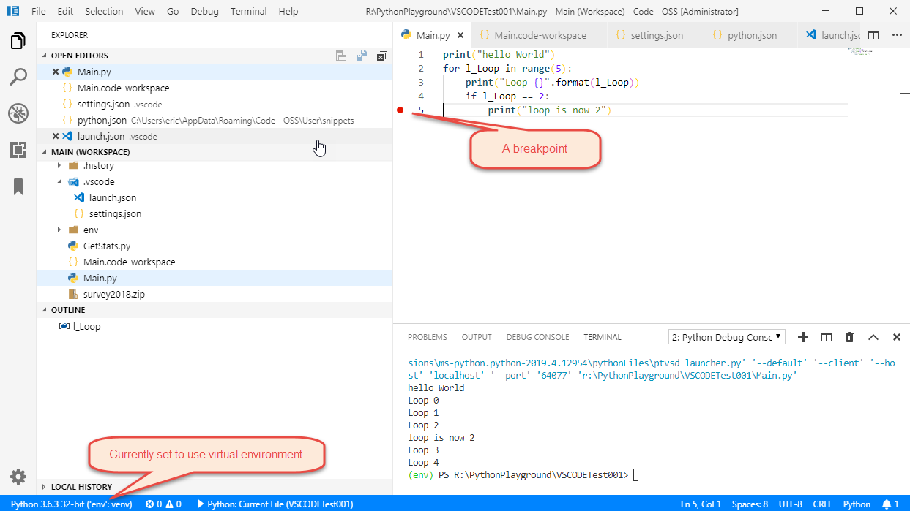
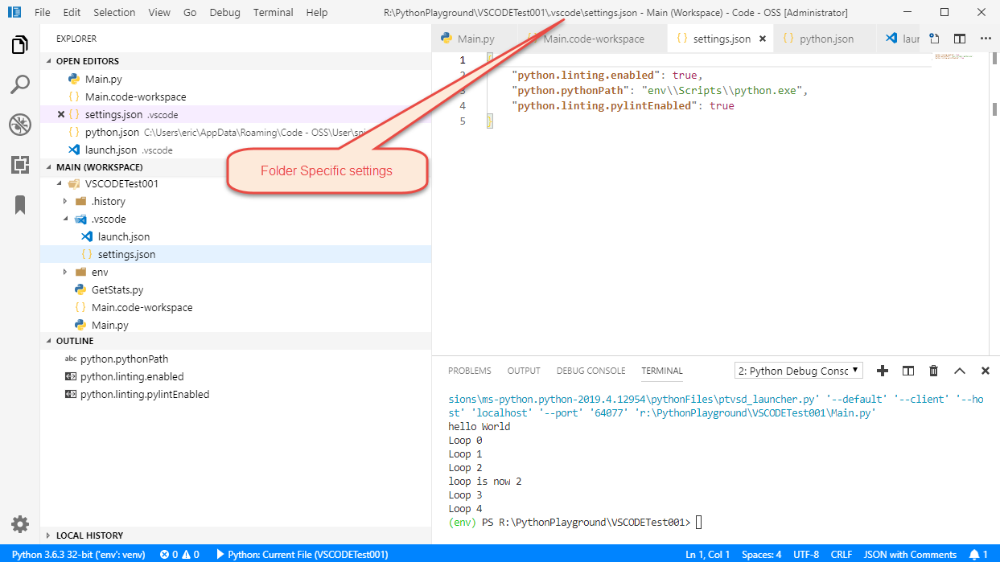
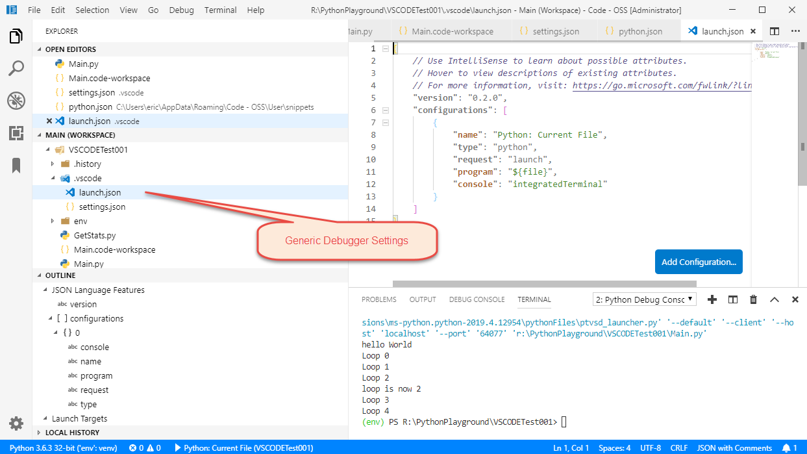
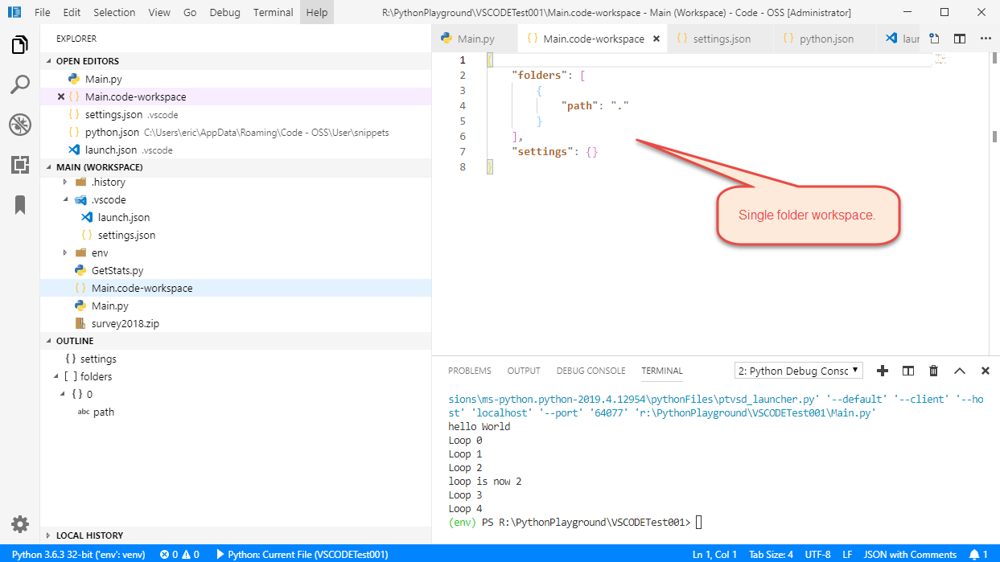

Developing and Debugging Python Programs with VSCODE (Visual Studio Code)
 Author: Eric Lendvai
Author: Eric Lendvai
Table of Contents
Prerequisites
This article is an addendum to the article, "Developing and Debugging Harbour Programs with VSCODE (Visual Studio Code)."
If you are primarily a Python developer, you could skip all but the debugging Harbour-specific sections from the main article.
Setting up the Python Extension
Go to https://marketplace.visualstudio.com/items?itemName=ms-python.python to download the extension, then install it.
This extension is maintained by Microsoft and is THE MOST popular extension.
As
stated in the marketplace, this extension provides, "IntelliSense,
linting, debugging, code navigation, code formatting, Jupyter notebook
support, refactoring, variable explorer, test explorer, snippets, and
more."
It is also python virtual environment-aware and provides support to Flask and Remote debugging.
The
list of features still changes and grows to a point that makes VSCODE
as powerful (in some aspects) to commercial editors of the likes of Wing
(by wingware.com) and PyCharm (by JetBrains)
The main advantages of VSCODE in comparison to the other editors:
- Free and Open-Source.
- Multi-Language Support, meaning the same keybinding can be used for all your development, regardless of the source code language.
- Very large set of extensions.
- Excellent integration with Git.
One of the easiest ways to see what you can do with the Python extension is to view the following 45-minute, YouTube video: https://www.youtube.com/watch?v=TILIcrrVABg
Reminder, in the binary download of VSCODE, by default, Microsoft will
"spy" on your use of VSCODE. They call that telemetry. See the main
article if you want to learn how to turn this off or how to use an MIT
install of VSCODE instead.
On Microsoft
Windows, to support Virtual Environment, you may need to tell windows to
allow Powershell scripts, since activate is a powershell scrip.
https:/go.microsoft.com/fwlink/?LinkID=135170
https:/go.microsoft.com/fwlink/?LinkID=135170
>powershell
>Set-ExecutionPolicy -ExecutionPolicy RemoteSigned -Scope CurrentUser
>exit
>Set-ExecutionPolicy -ExecutionPolicy RemoteSigned -Scope CurrentUser
>exit
To update pip install: >python -m pip install --upgrade pip
You can install Python packages in the VSCODE terminal, once a virtual environment is activated.
Python Workspace Example
The following demonstrates how to set up a workspace that is set for Python programs:




The browser did not close this tab. It may have been opened directly instead of from the Articles list. Use Back to Articles.